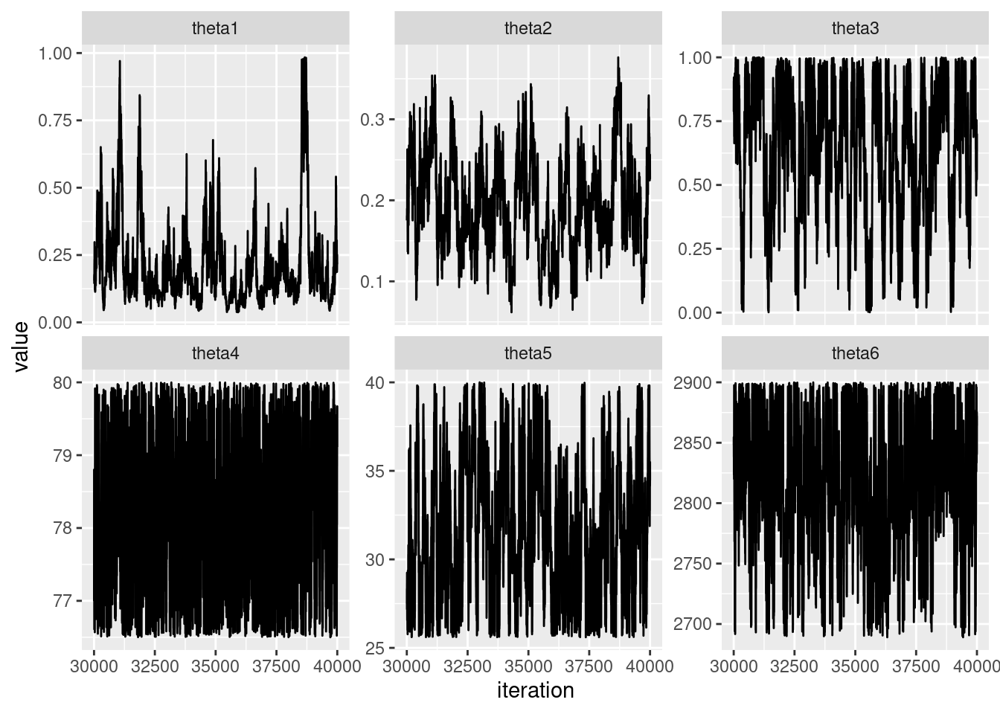
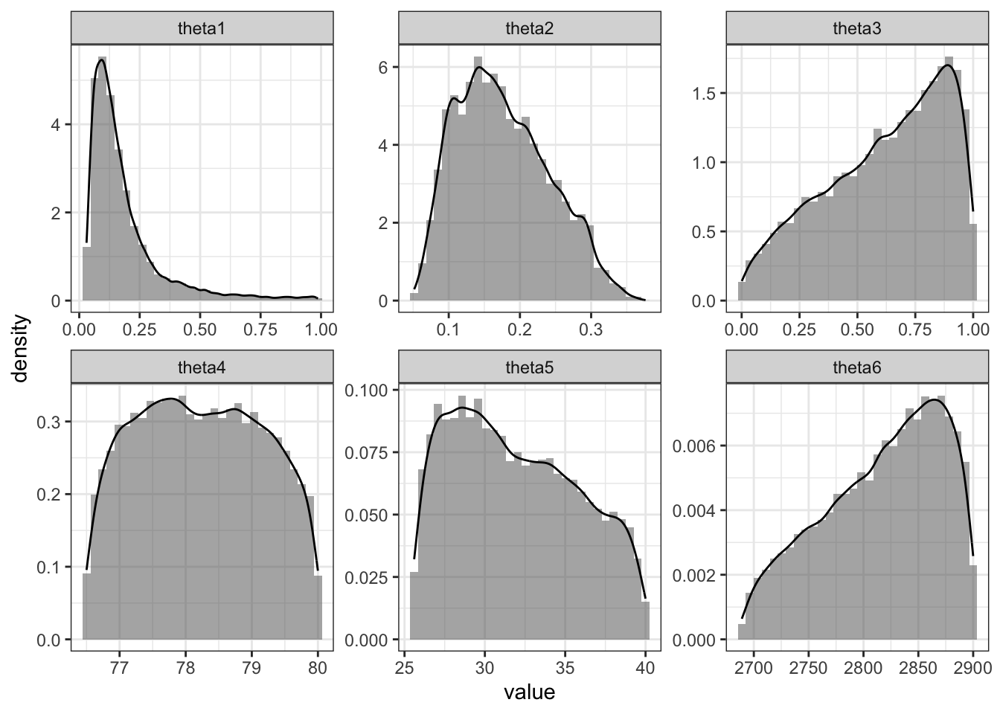
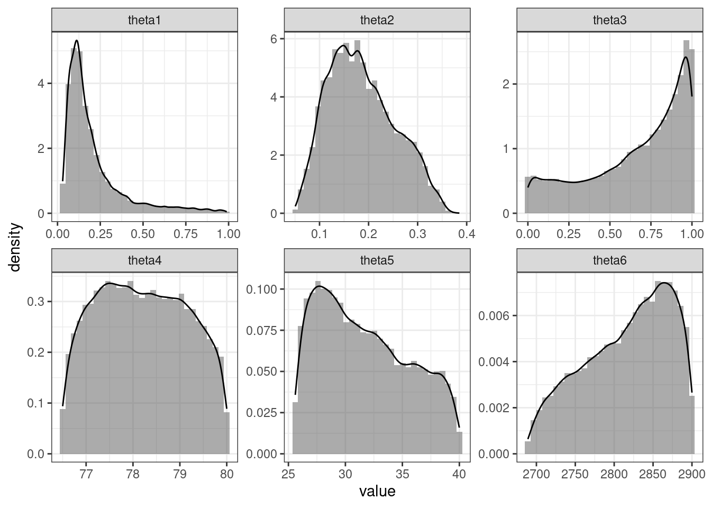

load libraries
library(truncnorm)
library(tidyverse)
library(coda)library(truncnorm)
library(tidyverse)
library(coda)Idea: writing the likelihood is difficult or impossible in closed form.
As usual, we wish to estimate some parameter vector \(\theta\). However, \(\theta\) relates to our observations \(y\) via some function \(y = f(\theta)\). The catch is, we cannot write \(f(\theta)\) directly, nor compute it exactly. Most often, all we can do is simulate from \(f(\theta)\).


The Interior Exploration using Seismic Investigations, Geodesy and Heat Transport (InSight) mission from NASA sent a robotic lander to Mars on May 5, 2018. The goal of the mission, which ended December 2022, was to study the crust, mantle and core of Mars.
Watch the video here to see the data that InSight collects from earthquakes on Mars.
seismic_data = data.frame(y = c(4.1, 2.5, 2589),
sd = c(0.2, 0.3, 157))Here our parameter vector \(\theta = (\alpha, \phi, \gamma_w, \kappa_m, \mu_m, \rho_m)\). These parameters describe the medium through which the earthquake waves propagate.
| Symbol in paper | Code | Definition |
|---|---|---|
| \(\alpha\) | theta[1] |
Pore shape aspect ratio |
| \(\phi\) | theta[2] |
Porosity |
| \(\gamma_w\) | theta[3] |
Water saturation (%) |
| \(\kappa_m\) | theta[4] |
Mineral bulk modulus (GPa) |
| \(\mu_m\) | theta[5] |
Mineral shear modulus (GPa) |
| \(\rho_m\) | theta[6] |
Mineral density (kg/m\(^3\)) |
The function \(f(\theta)\) that forward simulates data given our set of parameters is myBerry in the code below. This function serves as a wrapper to the berry_scm function, also defined below. Functions are translated into R from original MATLAB code by Wright, Morzfeld and Manga from the paper and publicly available on GitHub. 2
berry_scm <- function(k, mu, asp, x, ro1, P_water) {
# BERRYSCM - Effective elastic moduli for multi-component composite
# using Berryman's Self-Consistent (Coherent Potential Approximation) method.
#
# Arguments:
# k: Bulk moduli of the N constituent phases (numeric vector)
# mu: Shear moduli of the N constituent phases (numeric vector)
# asp: Aspect ratio for the inclusions of the N phases (numeric vector)
# x: Fraction of each phase. Solid, then fluid phase (numeric vector)
# ro1: Density of the original rock (numeric scalar)
# P_water: Proportion of water (numeric scalar)
#
# Returns:
# kbr: Effective bulk modulus (numeric scalar)
# mubr: Effective shear modulus (numeric scalar)
# vp: P-wave velocity (numeric scalar)
# vs: S-wave velocity (numeric scalar)
# ro2: Final rock density after fluid substitution (numeric scalar)
# k2: Rock bulk modulus after fluid substitution (numeric scalar)
# Ensure inputs are column vectors (equivalent to MATLAB's k(:), mu(:), etc.)
k <- as.vector(k)
mu <- as.vector(mu)
asp <- as.vector(asp)
x <- as.vector(x)
# Modify aspect ratios of inclusions that are equal to 1
asp[asp == 1] <- 0.99
# Initialize variables
theta <- numeric(length(asp))
fn <- numeric(length(asp))
# Compute theta and fn for oblate and prolate spheroids
obdx <- which(asp < 1)
prdx <- which(asp > 1)
theta[obdx] <- (asp[obdx] / ((1 - asp[obdx]^2)^(3/2))) * (acos(asp[obdx]) - asp[obdx] * sqrt(1 - asp[obdx]^2))
fn[obdx] <- (asp[obdx]^2 / (1 - asp[obdx]^2)) * (3 * theta[obdx] - 2)
theta[prdx] <- (asp[prdx] / ((asp[prdx]^2 - 1)^(3/2))) * (asp[prdx] * sqrt(asp[prdx]^2 - 1) - acosh(asp[prdx]))
fn[prdx] <- (asp[prdx]^2 / (asp[prdx]^2 - 1)) * (2 - 3 * theta[prdx])
# Initialize initial bulk and shear moduli
ksc <- sum(k * x)
musc <- sum(mu * x)
# Initialize iteration parameters
knew <- 0
tol <- 1e-6 * k[1]
del <- abs(ksc - knew)
niter <- 0
# Iterative solution for effective moduli
while (del > abs(tol) && niter < 3000) {
nusc <- (3 * ksc - 2 * musc) / (2 * (3 * ksc + musc))
a <- mu / musc - 1
b <- (1 / 3) * (k / ksc - mu / musc)
r <- (1 - 2 * nusc) / (2 * (1 - nusc))
f1 <- 1 + a * ((3 / 2) * (fn + theta) - r * ((3 / 2) * fn + (5 / 2) * theta - (4 / 3)))
f2 <- 1 + a * (1 + (3 / 2) * (fn + theta) - (r / 2) * (3 * fn + 5 * theta)) + b * (3 - 4 * r)
f2 <- f2 + (a / 2) * (a + 3 * b) * (3 - 4 * r) * (fn + theta - r * (fn - theta + 2 * theta^2))
f3 <- 1 + a * (1 - (fn + (3 / 2) * theta) + r * (fn + theta))
f4 <- 1 + (a / 4) * (fn + 3 * theta - r * (fn - theta))
f5 <- a * (-fn + r * (fn + theta - (4 / 3))) + b * theta * (3 - 4 * r)
f6 <- 1 + a * (1 + fn - r * (fn + theta)) + b * (1 - theta) * (3 - 4 * r)
f7 <- 2 + (a / 4) * (3 * fn + 9 * theta - r * (3 * fn + 5 * theta)) + b * theta * (3 - 4 * r)
f8 <- a * (1 - 2 * r + (fn / 2) * (r - 1) + (theta / 2) * (5 * r - 3)) + b * (1 - theta) * (3 - 4 * r)
f9 <- a * ((r - 1) * fn - r * theta) + b * theta * (3 - 4 * r)
p <- 3 * f1 / f2
q <- (2 / f3) + (1 / f4) + ((f4 * f5 + f6 * f7 - f8 * f9) / (f2 * f4))
p <- p / 3
q <- q / 5
# Update moduli
knew <- sum(x * k * p) / sum(x * p)
munew <- sum(x * mu * q) / sum(x * q)
del <- abs(ksc - knew)
ksc <- knew
musc <- munew
niter <- niter + 1
}
kbr <- ksc
mubr <- musc
# Density and fluid substitution
rofl1 <- 0.020 # density of gas
kfl1 <- 0 # bulk modulus of gas
ro_water <- 1000 # density of water
k_water <- 2.2e9 # bulk modulus of water
P_gas <- 1 - P_water
rofl2 <- P_gas * rofl1 + P_water * ro_water
kfl2 <- P_gas * kfl1 + P_water * k_water
k0 <- k[1] # bulk modulus of solid mineral phase
phi <- x[2] # porosity of rock
k1 <- kbr # dry bulk modulus
# Perform fluid substitution using Gassmann equation
a <- k1 / (k0 - k1) - kfl1 / (phi * (k0 - kfl1)) + kfl2 / (phi * (k0 - kfl2))
k2 <- k0 * a / (1 + a) # bulk modulus after fluid substitution
# Compute final density after fluid substitution
ro2 <- ro1 - phi * rofl1 + phi * rofl2
# Compute seismic velocities after fluid substitution
mu2 <- mubr
vp <- sqrt((k2 + (4 / 3) * mu2) / ro2)
vs <- sqrt(mu2 / ro2)
return(list(kbr = kbr, mubr = mubr, vp = vp, vs = vs, ro2 = ro2, k2 = k2))
}
myBerry <- function(theta, H = 3) {
# Extract parameters from theta
asp <- c(1, theta[1]) # Aspect ratio
x_phi <- theta[2] # Proportion of fluid (phi)
rock_vol <- 1 - theta[2] # Volume of solid phase (rock)
x <- c(rock_vol, x_phi) # Fraction of phases
rock_density <- theta[6] * rock_vol # Density of solid phase (basalt)
gas_density <- 0.020 * x_phi # Density of fluid phase (gas)
rhob1 <- rock_density + gas_density # Bulk density
# Percentage of water in pore space
P_water <- theta[3]
# Bulk and shear moduli (scaled by 1e9 as per MATLAB code)
k <- c(theta[4] * 1e9, 0) # Bulk modulus (first element)
mu <- c(theta[5] * 1e9, 0) # Shear modulus (first element)
# Call berryscm function (ensure berryscm function is defined in your R environment)
result <- berry_scm(k, mu, asp, x, rhob1, P_water)
# Return the required output from berryscm
return(result)
}Why does a normal likelihood make sense?
What priors are chosen for each unknown?
set.seed(360)
dtruncnormL = function(x, a, b, mean, sd) {
log(dtruncnorm(x, a=a, b=b, mean = mean, sd = sd))
}
rcnorm<-function(n, mean=0, sd=1, a=-Inf, b=Inf){
u = runif(n, pnorm((a - mean) / sd), pnorm((b - mean) / sd))
mean + (sd * qnorm(u))
}
logPosterior = function(theta) {
result = myBerry(theta)
y = c(result$vp / 1000, result$vs / 1000, result$ro2)
if(result$vp < result$vs) {
return(-Inf)
}
else{
return(
sum(dnorm(y, mean = seismic_data$y, sd = seismic_data$sd,
log = TRUE))
)
}
}
# THETA[1] = alpha
# THETA[2] = porosity
# THETA[3] = saturation
# THETA[4] = kappa_m
# THETA[5] = mu_m
# THETA[6] = rho_m
# starting point
alpha = 0.5
porosity = 0.25 #runif(1, 0.05, 0.50)
saturation = 0.05 #0 to 1
kappa_m = 78
mu_m = 33
rhom = 3000
theta = c(alpha, porosity, saturation, kappa_m, mu_m, rhom)
# prior
## indicator that parameters are in proper ranges * constant * indicator that Vp > Vs
# MCMC
S = 50000
accept = rep(0, length(theta))
THETA = NULL
for(i in 1:S) {
thetaStar = theta
thetaStar[1] = rcnorm(1, mean = theta[1], sd = .05,
a = 0.03, b = 0.99)
log.r = logPosterior(thetaStar) +
dtruncnormL(theta[1],
a=0.03, b=0.99,
mean = thetaStar[1], sd = .05) -
logPosterior(theta) -
dtruncnormL(thetaStar[1],
a=0.03, b=0.99,
mean = theta[1], sd = .05)
if(log(runif(1)) < log.r) {
theta = thetaStar
accept[1] = accept[1] + 1
}
thetaStar = theta
thetaStar[2] = rcnorm(1, mean = theta[2], sd = .05,
a = 0.05, b = 0.5)
log.r = logPosterior(thetaStar) +
dtruncnormL(thetaStar[2],
a=0.05, b=0.5,
mean = theta[2], sd = .05) -
logPosterior(theta) -
dtruncnormL(thetaStar[2],
a=0.05, b=0.5,
mean = theta[2], sd = .05)
if(log(runif(1)) < log.r) {
theta = thetaStar
accept[2] = accept[2] + 1
}
thetaStar = theta
thetaStar[3] = rcnorm(1, mean = theta[3], sd = 0.05,
a = 0, b = 1)
log.r = logPosterior(thetaStar) +
dtruncnormL(thetaStar[3],
a=0, b=1,
mean = theta[3], sd = 0.05) -
logPosterior(theta) -
dtruncnormL(thetaStar[3],
a=0, b=1,
mean = theta[3], sd = 0.05)
if(log(runif(1)) < log.r) {
theta = thetaStar
accept[3] = accept[3] + 1
}
thetaStar = theta
thetaStar[4] = rcnorm(1, mean = theta[4], sd = .5,
a = 76.5, b = 80)
log.r = logPosterior(thetaStar) +
dtruncnormL(thetaStar[4],
a=76.5, b=80,
mean = theta[4], sd = .5) -
logPosterior(theta) -
dtruncnormL(thetaStar[4],
a=76.5, b=80,
mean = theta[4], sd = .5)
if(log(runif(1)) < log.r) {
theta = thetaStar
accept[4] = accept[4] + 1
}
thetaStar = theta
thetaStar[5] = rcnorm(1, mean = theta[5], sd = 1,
a = 25.6, b = 40)
log.r = logPosterior(thetaStar) +
dtruncnormL(thetaStar[5],
a=25.6, b=40,
mean = theta[5], sd = 1) -
logPosterior(theta) -
dtruncnormL(thetaStar[5],
a=25.6, b=40,
mean = theta[5], sd = 1)
if(log(runif(1)) < log.r) {
theta = thetaStar
accept[5] = accept[5] + 1
}
thetaStar = theta
thetaStar[6] = rcnorm(1, mean = theta[6], sd = 20,
a = 2689, b = 2900)
log.r = logPosterior(thetaStar) +
dtruncnormL(thetaStar[6],
a=2689, b=2900,
mean = theta[6], sd = 20) -
logPosterior(theta) -
dtruncnormL(thetaStar[6],
a=2689, b=2900,
mean = theta[6], sd = 20)
if(log(runif(1)) < log.r) {
theta = thetaStar
accept[6] = accept[6] + 1
}
THETA = rbind(THETA, theta)
}N = nrow(THETA)
THETA = THETA %>%
mutate(iteration = seq(1,N))
THETA %>%
filter(iteration > 30000) %>%
pivot_longer(cols = 1:6) %>%
ggplot(aes(x = iteration, y = value)) +
geom_line() +
facet_wrap(~ name, scales = "free_y")
THETA %>%
filter(iteration > 20000) %>%
pivot_longer(cols = 1:6) %>%
ggplot(aes(x = value)) +
geom_histogram(aes(y = ..density..), alpha = 0.5) +
geom_density() +
facet_wrap(~ name, scales = "free") +
theme_bw()
library(knitr)
# posterior means of parameters
posteriorMeans =
THETA %>%
select(-iteration) %>%
colMeans()
posteriorMeans %>%
kable(col.names = c("parameter", "posteriorMean"))| parameter | posteriorMean |
|---|---|
| theta1 | 0.2083255 |
| theta2 | 0.1831104 |
| theta3 | 0.5988736 |
| theta4 | 78.2017496 |
| theta5 | 31.7572690 |
| theta6 | 2816.4036103 |
# generating data from posterior means
result = myBerry(posteriorMeans)
dataFromPostMean = c(result$vp / 1000, result$vs / 1000, result$ro2)
rbind(dataFromPostMean, seismic_data$y) %>%
kable(col.names = c("Vp", "Vs", "Rho"), digits = 3)| Vp | Vs | Rho | |
|---|---|---|---|
| dataFromPostMean | 4.603 | 2.596 | 2410.352 |
| 4.100 | 2.500 | 2589.000 |
Discuss with a neighbor: do you think the results are sensitive to the choice of prior?
logPosterior = function(theta) {
result = myBerry(theta)
y = c(result$vp / 1000, result$vs / 1000, result$ro2)
if(result$vp < result$vs) {
return(-Inf)
}
else{
return(
sum(dnorm(y, mean = seismic_data$y, sd = seismic_data$sd,
log = TRUE)) +
dbeta(theta[3], .5, .5, log = TRUE)
)
}
}
Let \(M_1\) be the hypothesis that there is water present under the surface of Mars and let \(M_0\) be the hypothesis that there is not. Really, we want to select between these two hypotheses.
To do this, consider the ratio of posterior probabilities
\[ \begin{aligned} \underbrace{\frac{Pr(M_1 | data)}{Pr(M_0 |data)}}_{\text{posterior odds}} = \underbrace{\frac{p({data} | M_1)}{p(data | M_0}}_{\text{Bayes factor}} \underbrace{\frac{p(M_1)}{p(M_0)}}_{\text{prior odds}} \end{aligned} \]
The Bayes factor tells us how the data supports one hypothesis over another. Notice that we cannot compute the Bayes factor directly. We must expand,
\[ \begin{aligned} p(data | M_i) &= \int p(data, \theta | M_i) d\theta\\ &= \int p(data | \theta) p(\theta | M_i) d \theta \end{aligned} \]
Notice that the Bayes factor does depend on the prior \(p(\theta | M_i)\).
Wright, V., Morzfeld, M., & Manga, M. (2024). Liquid water in the Martian mid-crust. Proceedings of the National Academy of Sciences, 121(35), e2409983121.↩︎